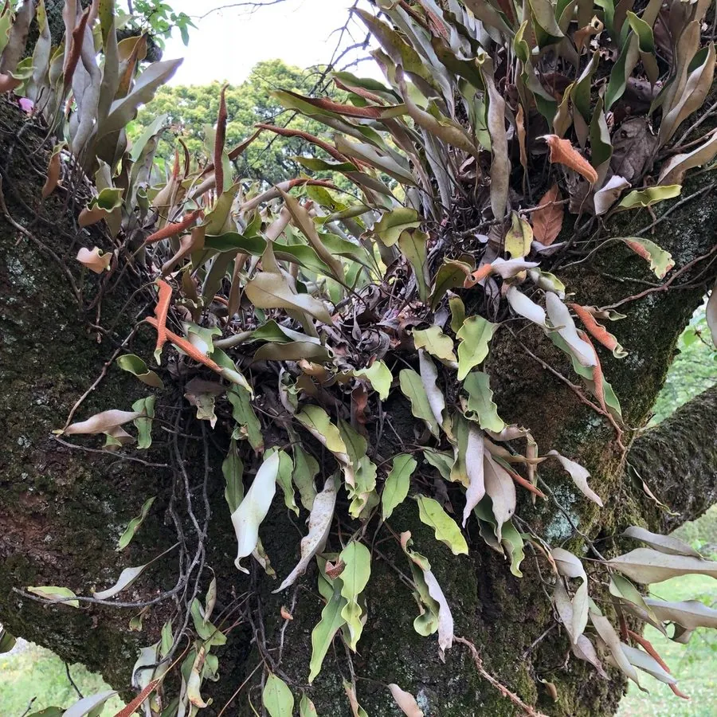

蕨类与裸子植物 · 植物界
石韦 Pyrrosia lingua

石韦的叶片革质厚实，叶背密生星状毛，能附生于石上耐旱生存，全草入药有清热利尿、止咳化痰之效。
- 分类
- 门蕨类植物门纲水龙骨纲目水龙骨目科水龙骨科属石韦属
- 栖息环境
- 岩石表面、树干与老墙，喜阴湿但耐干旱
- 地理分布
- 中国长江以南各地及东亚、东南亚地区
- 保护级别
- 暂无评估；野生种群常见
物种志
石韦是水龙骨科的多年生蕨类，株高 10–30 cm。根状茎横走，密生棕色鳞片。叶远生，叶片椭圆状披针形，革质厚实，表面绿色或灰绿色，背面密生星状毛，呈黄褐色或灰白色，像一层毛毡；叶柄长而硬。孢子囊群圆形或近圆形，密布于叶背，成熟时呈褐色，常被星状毛覆盖，使叶背显得绒毛状。
石韦喜阴湿、耐干旱，常附生于岩石表面、树干与老墙上，在石缝中也能扎根生长，是典型的耐旱附生蕨类。它的星状毛能减少水分蒸发、反射强光，帮助它在干燥环境中生存。石韦以孢子繁殖，根状茎蔓延。全草入药称“石韦”，有清热利尿、止咳化痰、凉血止血之效，是传统中药材，常用于泌尿系统感染与咳嗽。它在东亚与东南亚分布广泛。
形态与习性
- 株高10–30 cm
- 叶椭圆状披针形，革质厚实
- 叶背密生星状毛，黄褐色
- 孢子囊群圆形，密布叶背
- 药用清热利尿、止咳化痰
- 习性耐旱附生，常见于岩石上
趣味知识
- 石韦叶背密生星状毛，像铺了一层毛毡，能减少水分蒸发。
- 它常长在光秃的岩壁上，干旱时也能存活，是耐旱的附生蕨类。
- 中药材“石韦”能清热利尿、止咳化痰，常用于泌尿系统感染。